Anki-jin
Impara il vocabolario giapponese con le flashcard digitali. Questa guida ti spiega come installare l'app e sfruttare tutte le funzionalità.
Apri l'appPrima di iniziare: 2 cose da fare
Segui questi due passaggi per un'esperienza ottimale. Ci vogliono meno di 2 minuti.
Installa l'app sul tuo dispositivo
Aggiungendo Anki-jin alla schermata Home ottieni un'icona dedicata, il funzionamento senza browser e l'uso offline: esattamente come un'app nativa.
- Apri Safari (non Chrome o Firefox: solo Safari supporta l'installazione su iOS)
- Naviga all'indirizzo dell'app: https://appare.vercel.app/
- Tocca il pulsante Condividi: l'icona del quadrato con la freccia verso l'alto, nella barra in basso
- Scorri verso il basso e seleziona «Aggiungi alla schermata Home»
- Tocca «Aggiungi» in alto a destra: l'icona di Anki-jin apparirà sulla schermata Home
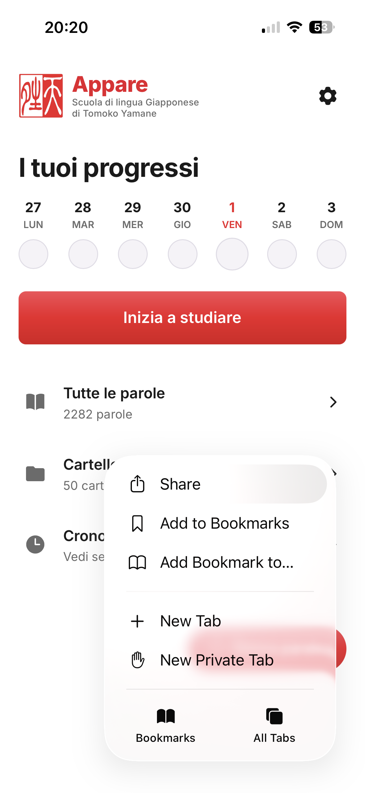
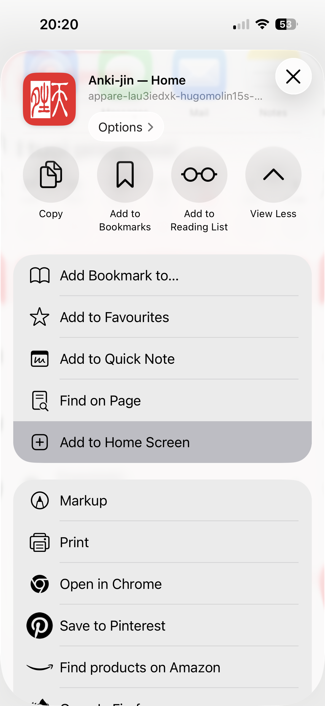
- Apri Chrome
- Naviga all'indirizzo: https://appare.vercel.app/
- Tocca i tre puntini in alto a destra
- Seleziona «Aggiungi alla schermata Home» oppure «Installa app»
- Conferma toccando «Installa»
- Apri Chrome o Edge
- Naviga all'indirizzo: https://appare.vercel.app/
- Clicca sull'icona Installa nella barra degli indirizzi (icona del monitor con freccia verso il basso) oppure vai su Menu → «Installa Anki-jin»
- Conferma nel dialogo che appare
Crea un account per salvare i tuoi progressi
Senza account, le parole e i progressi sono salvati solo su quel dispositivo e vengono persi se pulisci la cache. Con un account gratuito, tutto è sincronizzato automaticamente.
- Tocca l'icona ⚙ Impostazioni in alto a destra (su mobile) oppure clicca «Impostazioni» nella barra laterale (su desktop)
- Nella sezione Account, tocca «Accedi / Registrati»
- Inserisci la tua email e scegli una password, poi tocca «Registrati»
- L'app sincronizza automaticamente: nessuna azione necessaria
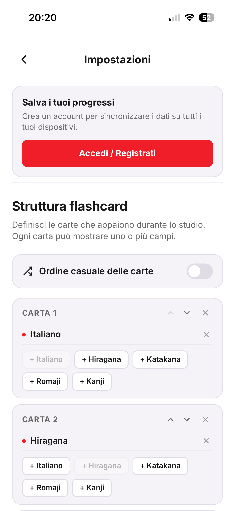
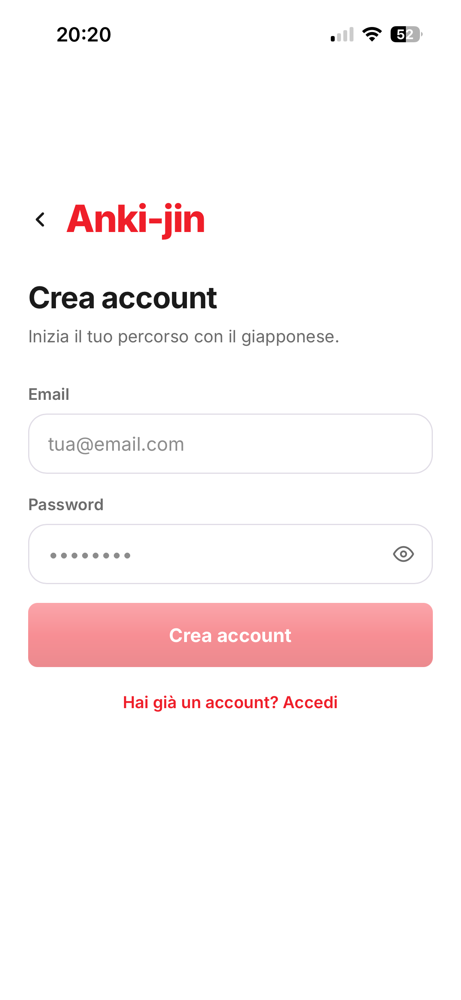
Sezione 1
Cos'è Anki-jin
Anki-jin è un'applicazione web progressiva (PWA) per imparare il vocabolario giapponese, sviluppata specificamente per gli studenti della Scuola di Lingua Giapponese di Tomoko Yamane di Perugia.
L'app funziona come un sistema di flashcard digitali. Per ogni parola vengono memorizzati cinque campi:
Italiano
Il significato in italiano: es. acqua
Hiragana
Sillabario hiragana: es. みず
Katakana
Sillabario katakana: es. ミズ
Romaji
Traslitterazione latina: es. mizu
Kanji
Carattere ideografico: es. 水
L'app è ottimizzata per lo smartphone ma funziona anche su tablet e computer desktop, dove mostra una barra laterale di navigazione permanente.
Sezione 2
Requisiti tecnici
Browser supportati
- ✓ Safari su iPhone/iPad (consigliato per installazione PWA)
- ✓ Chrome, Edge su Android e Desktop
- ✓ Firefox su Desktop
- ✓ Qualsiasi browser moderno con supporto ES2022+
Connessione internet
- ✓ Necessaria al primo avvio (per scaricare l'app)
- ✓ Necessaria per la sincronizzazione cloud (login)
- ✓ NON necessaria dopo il primo avvio: l'app funziona offline
Sezione 3
Primo avvio e account
L'app funziona senza account: al primo avvio vengono caricate automaticamente tutte le parole del programma scolastico e puoi iniziare a studiare subito. I dati vengono però salvati solo su quel dispositivo.
Come creare un account
- 1Tocca l'icona ⚙ in alto a destra (mobile) oppure clicca «Impostazioni» nella barra laterale (desktop)
- 2Nella sezione Account, tocca «Accedi / Registrati»
- 3Inserisci email e password, poi tocca «Registrati»
- 4Al login, l'app sincronizza automaticamente tutti i tuoi dati
Logout
Il pulsante «Esci» nelle Impostazioni disconnette l'account. Alla disconnessione i dati locali vengono rimossi (per sicurezza). Rientrando con lo stesso account, vengono ripristinati dal cloud.
Sezione 4
La schermata Home
La Home è il punto di partenza. Mostra il riepilogo dei progressi della settimana e il pulsante per iniziare a studiare.
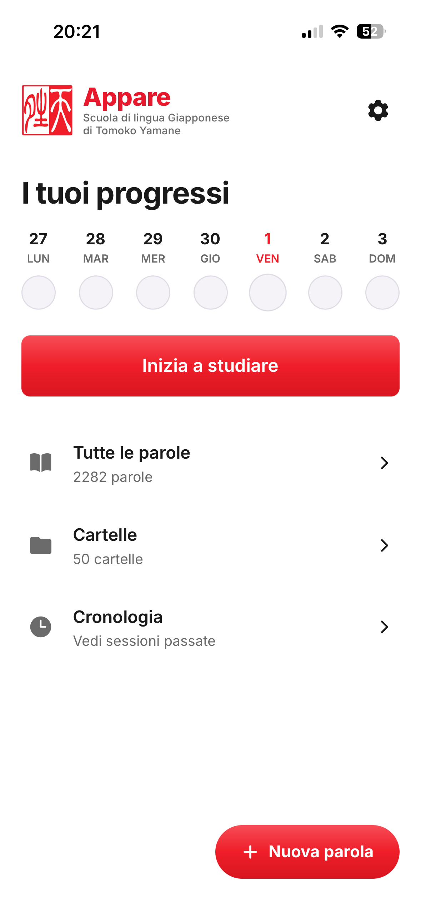
Heatmap dei progressi
I cerchi colorati rappresentano i giorni della settimana corrente. Il colore varia in base al numero di parole studiate rispetto all'obiettivo giornaliero:
Pulsante «Inizia a studiare»
Avvia una sessione con 10 parole casuali dalla libreria completa. Per studiare parole specifiche, usa la selezione nelle Cartelle o nel Dizionario.
Sezione 5
Aggiungere parole
Oltre alle centinaia di parole pre-caricate, puoi aggiungere il tuo vocabolario personale.
Come aggiungere una parola
- 1Tocca «Nuova parola» (pulsante rosso in basso a destra su mobile, oppure nella barra laterale su desktop)
- 2Compila i campi: Italiano e Hiragana sono obbligatori; Romaji, Katakana e Kanji sono opzionali
- 3Seleziona la categoria grammaticale (Verbo Godan, Sostantivo, ecc.)
- 4Scegli il tipo: Parola o Frase
- 5Tocca «Salva»
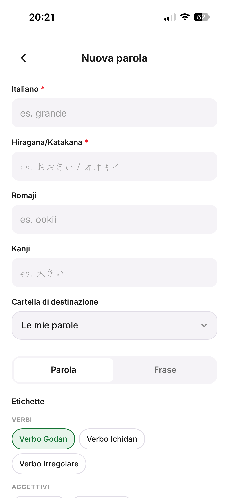
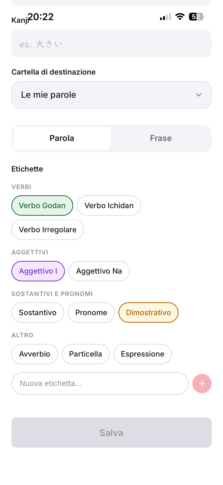
Modificare o eliminare una parola
Tocca una parola qualsiasi nell'elenco per aprirla. Da lì puoi modificare tutti i campi oppure eliminarla con il pulsante rosso in fondo (richiede conferma).
Sezione 6
Tutte le parole: Dizionario
La sezione «Tutte le parole» mostra l'intera libreria di vocabolario con ricerca, filtri e ordinamento.
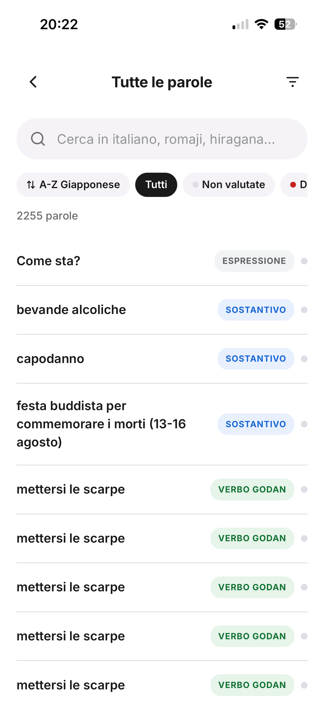
Ricerca
La barra di ricerca filtra in tempo reale cercando in tutti i campi: italiano, hiragana, katakana, romaji, kanji.
Pallini colorati: punteggio auto-valutazione
Sezione 7
Le cartelle
Le cartelle organizzano il vocabolario per argomento o lezione. L'app include già la struttura del programma scolastico.
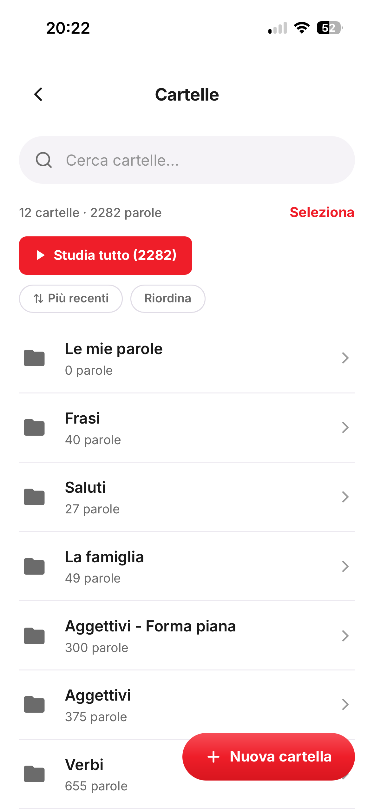
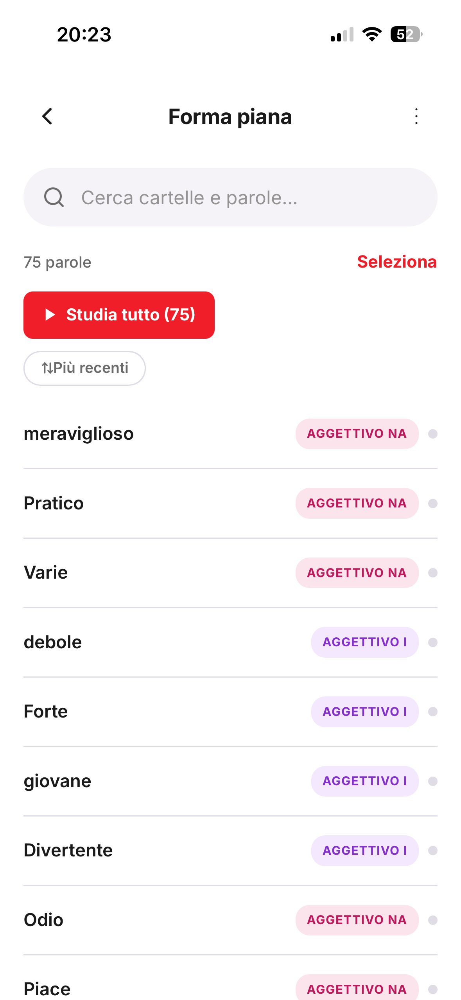
Cartelle pre-caricate
- ✓ Quaderno di Grammatica Giapponese (Lezioni 4–15)
- ✓ Verbi (forma dizionario, masu, te, nai, ta)
- ✓ Aggettivi, I luoghi, I giorni, La famiglia, Saluti, Frasi
Studiare da una cartella
Dentro una cartella, tocca «Studia tutto» per avviare una sessione con tutte le parole della cartella (incluse le sottocartelle). Oppure usa «Seleziona» per scegliere parole specifiche.
Creare una nuova cartella
Tocca «Nuova cartella» nella lista cartelle, inserisci un nome e scegli un colore opzionale.
Sezione 8
Studiare con le flashcard
La sessione di studio mostra una parola alla volta su una flashcard interattiva. Tocca la carta per vedere i lati successivi, poi valuta quanto la conosci.
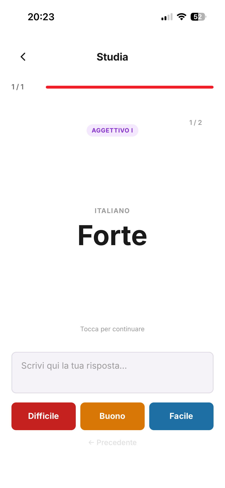
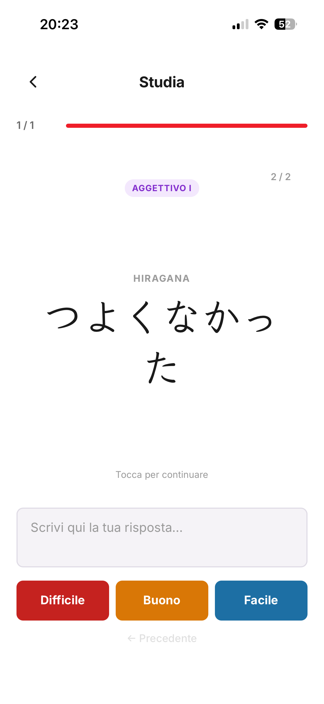
Auto-valutazione
Dopo aver visto la parola, scegli uno dei tre pulsanti:
Il punteggio viene salvato e visibile come pallino colorato nell'elenco parole. Premendo un pulsante si passa automaticamente alla parola successiva.
Campo di testo
Sotto la flashcard c'è uno spazio libero dove puoi scrivere la tua risposta prima di vedere quella corretta. Si svuota automaticamente ad ogni parola.
Fine sessione
Al termine appare la schermata «Ottimo lavoro!» con la possibilità di ricominciare o tornare alla Home.
Sezione 9
Cronologia
La Cronologia mostra tutto lo storico delle sessioni di studio, organizzato in Anno → Mese → Settimana → Giorno.
Ri-studiare un giorno
Naviga fino al giorno desiderato e tocca «Studia tutto» per ripassare le parole di quella sessione.
Colorare i periodi
Tocca il pallino accanto a un periodo per assegnargli un colore decorativo: utile per evidenziare lezioni importanti.
Sezione 10
Impostazioni
Struttura flashcard
Personalizza quali campi appaiono su ogni lato della flashcard e il loro ordine. Puoi creare lati con più campi contemporaneamente (es. Hiragana + Romaji sullo stesso lato).
Dimensione testo
Slider dall'80% al 130% per adattare la dimensione di tutto il testo nell'app alle tue preferenze visive.
Obiettivo di studio
Imposta quante parole vuoi studiare ogni giorno. Questo valore influenza i colori della heatmap nella Home (default: 10).
Sezione 11
Sincronizzazione cloud
L'app usa una strategia «local-first»: i dati vivono nel browser e il cloud è uno specchio sempre aggiornato.
Cosa viene sincronizzato
- ✓ Parole aggiunte dall'utente
- ✓ Cartelle create dall'utente
- ✓ Storico di studio
- ✓ Colori dei periodi in Cronologia
- ✓ Impostazioni (obiettivo, font, layout flashcard)
- ✓ Punteggi delle parole (Difficile/Buono/Facile)
Cosa NON viene sincronizzato
- ✗ Parole e cartelle pre-caricate (seed): sono già nel codice dell'app
Sezione 12
Domande frequenti
Ho perso tutte le mie parole dopo aver cancellato la cache.
Senza un account, i dati sono solo nel localStorage del browser e vengono cancellati con la cache. Per evitarlo, crea un account e fai login: i dati vengono salvati sul cloud e ripristinati su qualsiasi dispositivo.
Ho creato un account ma non vedo le mie vecchie parole.
Se avevi parole senza essere loggato, al primo login l'app dovrebbe averle caricate su cloud automaticamente. Se non è successo: esci dall'account, riapri l'app (le parole locali ricompaiono), poi fai di nuovo login.
Le parole seed sono scomparse.
Le parole pre-caricate vengono ricaricate automaticamente ad ogni aggiornamento dell'app. Aggiorna la pagina (o reinstalla la PWA) e riappariranno.
La heatmap non mostra la sessione di oggi.
La sola apertura della flashcard non registra la parola: solo premere Difficile/Buono/Facile la salva nello storico. Completa almeno una valutazione e la heatmap si aggiorna in tempo reale.
Come studio solo le parole di una lezione specifica?
Vai in Cartelle → «Quaderno di grammatica giapponese» → apri la sottocartella della lezione (es. «Lezione 07») → tocca «Studia tutto».
Posso aggiungere le mie parole oltre a quelle pre-caricate?
Sì. Tocca «Nuova parola» e inserisci i dati. Le parole personali finiscono nella cartella «Le mie parole» (se non ne assegni un'altra) e sono visibili anche in «Tutte le parole».
Una parola può stare in più cartelle contemporaneamente?
No. Ogni parola appartiene a una sola cartella alla volta. È però sempre visibile in «Tutte le parole» indipendentemente dalla cartella.
Il browser mi chiede «Vuoi uscire dalla pagina?» durante lo studio.
È il comportamento corretto: l'app intercetta la navigazione per evitare di perdere i progressi della sessione. Clicca «Esci» nel modale per uscire definitivamente.